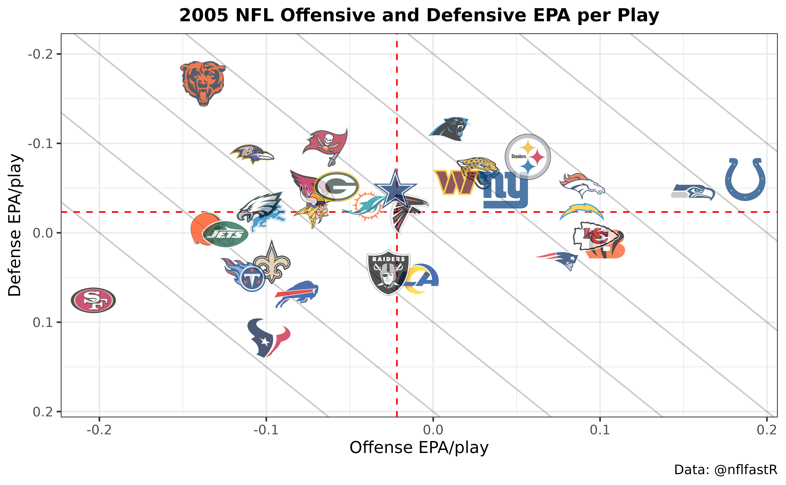

A beginner's guide to nflfastR
Ben Baldwin
Source:vignettes/beginners_guide.Rmd
beginners_guide.RmdIntroduction
The following guide will assume you have R installed. I also highly recommend working in RStudio. If you need help getting those installed or are unfamiliar with how RStudio is laid out, please see this section of Lee Sharpe’s guide.
A quick word if you’re new to programming: all of this is happening in R. Obviously, you need to install R on your computer to do any of this. Make sure you save what you’re doing in a script (in RStudio, File –> New File –> R script) so you can save your work and run multiple lines of code at once. To run code from a script, highlight what you want, and press control + enter or press the Run button in the top of the editor (see Lee’s guide). If you don’t highlight anything and press control + enter, the currently selected line will run. As you go through your R journey, you might get stuck and have to google a bunch of things, but that’s totally okay and normal. That’s how I got started!
Setup
First, you need to install the magic packages. You only need to run this step once on a given computer. For these you can just type them into the RStudio console (look for the Console pane in RStudio) directly since you’re never going to be doing this again.
Install packages
install.packages("tidyverse", type = "binary")
install.packages("ggrepel", type = "binary")
install.packages("nflreadr", type = "binary")
install.packages("nflplotR", type = "binary")Load packages
Okay, now here’s the stuff you’re going to want to start putting into
your R script. The following loads tidyverse, which
contains a lot of helper functions for working with data and
ggrepel for making figures, along with
nflreadr (which allows one to quickly download
nflfastR data, along with a lot of other data). Finally,
nflplotR makes plotting easier.
This one is optional but makes R prefer not to display numbers in scientific notation, which I find very annoying:
options(scipen = 9999)Load data
This will load the full play by play for the 2019 season (including
playoffs). We’ll get to how to get more seasons later. Note that this is
downloading pre-cleaned data from the nflfastR data repository using the
load_pbp() function included in nflreadr,
which is much faster than building pbp from scratch.
data <- load_pbp(2019)Basics: how to look at your data
Dimensions
Before moving forward, here are a few ways to get a sense of what’s
in a dataframe. We can check the dimensions of the
data, and this tells us that there are 47260 rows (i.e.,
plays) in the data and 372 columns (variables):
dim(data)
#> [1] 47260 372str displays the structure of the
dataframe:
str(data[1:10])
#> nflvrs_d [47,260 × 10] (S3: nflverse_data/tbl_df/tbl/data.table/data.frame)
#> $ play_id : num [1:47260] 1 36 51 79 100 121 148 185 214 239 ...
#> $ game_id : chr [1:47260] "2019_01_ATL_MIN" "2019_01_ATL_MIN" "2019_01_ATL_MIN" "2019_01_ATL_MIN" ...
#> $ old_game_id : chr [1:47260] "2019090804" "2019090804" "2019090804" "2019090804" ...
#> $ home_team : chr [1:47260] "MIN" "MIN" "MIN" "MIN" ...
#> $ away_team : chr [1:47260] "ATL" "ATL" "ATL" "ATL" ...
#> $ season_type : chr [1:47260] "REG" "REG" "REG" "REG" ...
#> $ week : int [1:47260] 1 1 1 1 1 1 1 1 1 1 ...
#> $ posteam : chr [1:47260] NA "ATL" "ATL" "ATL" ...
#> $ posteam_type: chr [1:47260] NA "away" "away" "away" ...
#> $ defteam : chr [1:47260] NA "MIN" "MIN" "MIN" ...
#> - attr(*, "nflverse_timestamp")= chr "2025-07-31 14:16:40 EDT"
#> - attr(*, "nflverse_type")= chr "play by play data"
#> - attr(*, "nflfastR_version")= chr "5.1.0.9001"In the above, I’ve added in the [1:10], which selects
only the first 10 columns, otherwise the list is extremely long
(remember from above that there are 372 columns!).
Normally, you would just type str(data).
You can similarly take a glimpse at your data:
glimpse(data[1:10])
#> Rows: 47,260
#> Columns: 10
#> $ play_id <dbl> 1, 36, 51, 79, 100, 121, 148, 185, 214, 239, 255, 277, 29…
#> $ game_id <chr> "2019_01_ATL_MIN", "2019_01_ATL_MIN", "2019_01_ATL_MIN", …
#> $ old_game_id <chr> "2019090804", "2019090804", "2019090804", "2019090804", "…
#> $ home_team <chr> "MIN", "MIN", "MIN", "MIN", "MIN", "MIN", "MIN", "MIN", "…
#> $ away_team <chr> "ATL", "ATL", "ATL", "ATL", "ATL", "ATL", "ATL", "ATL", "…
#> $ season_type <chr> "REG", "REG", "REG", "REG", "REG", "REG", "REG", "REG", "…
#> $ week <int> 1, 1, 1, 1, 1, 1, 1, 1, 1, 1, 1, 1, 1, 1, 1, 1, 1, 1, 1, …
#> $ posteam <chr> NA, "ATL", "ATL", "ATL", "ATL", "ATL", "MIN", "MIN", "MIN…
#> $ posteam_type <chr> NA, "away", "away", "away", "away", "away", "home", "home…
#> $ defteam <chr> NA, "MIN", "MIN", "MIN", "MIN", "MIN", "ATL", "ATL", "ATL…Where again I’m only showing the first 10 columns. The usual command
would be glimpse(data).
Variable names
Another very useful command is to get the names of the
variables in the data, which you would get by entering
names(data) (I won’t show here because, again, it is
372 columns).
That is a lot to work with!
Viewer
One more way to look at your data is with the View()
function. If you’re coming from an Excel background, this will help you
feel more at home as a way to see what’s in the data.
View(data)This will open the viewer in RStudio in a new panel. Try it out yourself! Since there are so many columns, the Viewer won’t show them all. To pick which columns to view, you can select some:
The |> thing lets you pipe together a bunch of
different commands. So we’re taking our data, “select”ing a
few variables we want to look at, and then Viewing. Again, I can’t
display the results of that here, but try it out yourself!
Head + manipulation
To start, let’s just look at the first few rows (the “head”) of the data.
data |>
select(posteam, defteam, desc, rush, pass) |>
head()
#> ── nflverse play by play data ──────────────────────────────────────────────────
#> ℹ Data updated: 2025-07-31 18:16:40 UTC
#> # A tibble: 6 × 5
#> posteam defteam desc rush pass
#> <chr> <chr> <chr> <dbl> <dbl>
#> 1 NA NA GAME 0 0
#> 2 ATL MIN 5-D.Bailey kicks 65 yards from MIN 35 to end zone… 0 0
#> 3 ATL MIN (15:00) 2-M.Ryan sacked at ATL 17 for -8 yards (5… 0 1
#> 4 ATL MIN (14:20) 24-D.Freeman right tackle to ATL 21 for 4… 1 0
#> 5 ATL MIN (13:41) (Shotgun) 2-M.Ryan scrambles left end to … 0 1
#> 6 ATL MIN (12:59) 5-M.Bosher punt is BLOCKED by 50-E.Wilson… 0 0A couple things. “desc” is the important variable that
lists the description of what happened on the play, and
head says to show the first few rows (the “head” of the
data). Since this is already sorted by game, these are the first 6 rows
from a week 1 game, ATL @ MIN. To make code easier to read, people often
put each part of a pipe on a new line, which is useful when working with
more complicated functions. We could run:
And it would return the exact same output as the one written out in multiple lines, but the code isn’t as easy to read.
We’ve covered select, and the next important function to
learn is filter, which lets you filter the data to what you
want. The following returns only plays that are run plays and pass
plays; i.e., no punts, kickoffs, field goals, or dead ball penalties
(e.g. false starts) where we don’t know what the attempted play was.
data |>
filter(rush == 1 | pass == 1) |>
select(posteam, desc, rush, pass, name, passer, rusher, receiver) |>
head()
#> ── nflverse play by play data ──────────────────────────────────────────────────
#> ℹ Data updated: 2025-07-31 18:16:40 UTC
#> # A tibble: 6 × 8
#> posteam desc rush pass name passer rusher receiver
#> <chr> <chr> <dbl> <dbl> <chr> <chr> <chr> <chr>
#> 1 ATL (15:00) 2-M.Ryan sacked at A… 0 1 M.Ry… M.Ryan NA NA
#> 2 ATL (14:20) 24-D.Freeman right t… 1 0 D.Fr… NA D.Fre… NA
#> 3 ATL (13:41) (Shotgun) 2-M.Ryan s… 0 1 M.Ry… M.Ryan NA NA
#> 4 MIN (12:53) 33-D.Cook right end … 1 0 D.Co… NA D.Cook NA
#> 5 MIN (12:32) 8-K.Cousins pass sho… 0 1 K.Co… K.Cou… NA D.Cook
#> 6 MIN (11:57) 8-K.Cousins pass sho… 0 1 K.Co… K.Cou… NA A.Thiel…Compared to the first time we did this, the opening line for the
start of the game, the kickoff, and the punt are now gone. Note that if
you’re checking whether a variable is equal to something, we need to use
the double equals sign == like above. There’s probably some
technical reason for this [shrug emoji]. Also, the character
| is used for “or”, and & for “and”. So
rush == 1 | pass == 1 means “rush or pass”.
Note that the rush, pass,
name, passer, rusher, and
receiver columns are all nflfastR creations,
where we have provided these to make working with the data easier. As we
can see above, passer is filled in for all dropbacks
(including sacks and scrambles, which also have pass = 1),
and name is equal to the passer on pass plays and the
rusher on rush plays. Think of this as the primary player involved on a
play.
What if we wanted to view special teams plays? Again, we can use
filter:
data |>
filter(special == 1) |>
select(down, ydstogo, desc) |>
head()
#> ── nflverse play by play data ──────────────────────────────────────────────────
#> ℹ Data updated: 2025-07-31 18:16:40 UTC
#> # A tibble: 6 × 3
#> down ydstogo desc
#> <dbl> <dbl> <chr>
#> 1 NA 0 5-D.Bailey kicks 65 yards from MIN 35 to end zone, Touchback.
#> 2 4 2 (12:59) 5-M.Bosher punt is BLOCKED by 50-E.Wilson, Center-47-J.…
#> 3 NA 0 (Kick formation) 5-D.Bailey extra point is GOOD, Center-58-A.Cu…
#> 4 NA 0 5-D.Bailey kicks 67 yards from MIN 35 to ATL -2. 38-K.Barner to…
#> 5 NA 0 (Kick formation) 5-D.Bailey extra point is GOOD, Center-58-A.Cu…
#> 6 NA 0 5-D.Bailey kicks 65 yards from MIN 35 to end zone, Touchback.Fourth down plays?
data |>
filter(down == 4) |>
select(down, ydstogo, desc) |>
head()
#> ── nflverse play by play data ──────────────────────────────────────────────────
#> ℹ Data updated: 2025-07-31 18:16:40 UTC
#> # A tibble: 6 × 3
#> down ydstogo desc
#> <dbl> <dbl> <chr>
#> 1 4 2 (12:59) 5-M.Bosher punt is BLOCKED by 50-E.Wilson, Center-47-J.…
#> 2 4 19 (2:38) 5-M.Bosher punts 33 yards to MIN 8, Center-47-J.Harris, …
#> 3 4 20 (12:33) 2-B.Colquitt punts 51 yards to ATL 17, Center-58-A.Cutt…
#> 4 4 27 (1:49) 5-M.Bosher punts 45 yards to MIN 10, Center-47-J.Harris,…
#> 5 4 10 (:49) 2-B.Colquitt punts 57 yards to ATL 33, Center-58-A.Cuttin…
#> 6 4 1 (10:56) 2-B.Colquitt punts 42 yards to ATL 10, Center-58-A.Cutt…Fourth down plays that aren’t special teams plays?
data |>
filter(down == 4 & special == 0) |>
select(down, ydstogo, desc) |>
head()
#> ── nflverse play by play data ──────────────────────────────────────────────────
#> ℹ Data updated: 2025-07-31 18:16:40 UTC
#> # A tibble: 6 × 3
#> down ydstogo desc
#> <dbl> <dbl> <chr>
#> 1 4 5 (9:25) (Shotgun) 2-M.Ryan pass deep left to 18-C.Ridley for 20 …
#> 2 4 2 (4:39) (Punt formation) PENALTY on MIN, Delay of Game, 5 yards,…
#> 3 4 2 (1:27) (No Huddle, Shotgun) 2-M.Ryan pass short left to 11-J.Jo…
#> 4 4 1 (2:59) (Punt formation) Direct snap to 41-A.Levine. 41-A.Levine…
#> 5 4 3 (9:30) (Shotgun) 3-R.Griffin pass short left to 89-M.Andrews fo…
#> 6 4 1 (3:55) 17-J.Allen FUMBLES (Aborted) at NYJ 37, RECOVERED by NYJ…So far, we’ve just been taking a look at the initial dataset we
downloaded, but none of our results are preserved. To save a new
dataframe of just the plays we want, we need to use <-
to assign a new dataframe. Let’s save a new dataframe that’s just run
plays and pass plays with non-missing EPA, called
pbp_rp.
In the above, !is.na(epa) means to exclude plays with
missing (na) EPA. The ! symbol is often used
by computer folk to negate something, so is.na(epa) means
“EPA is missing” and !is.na(epa) means “EPA is not
missing”, which we have used above.
Some basic stuff: Part 1
Okay, we have a big dataset where we call dropbacks pass plays and non-dropbacks rush plays. Now we actually want to, like, do stuff.
Group by and Summarize
Let’s take a look at how various Cowboys’ running backs fared on run plays in 2019:
pbp_rp |>
filter(posteam == "DAL", rush == 1) |>
group_by(rusher) |>
summarize(
mean_epa = mean(epa), success_rate = mean(success), ypc = mean(yards_gained), plays = n()
) |>
arrange(-mean_epa) |>
filter(plays > 20)
#> # A tibble: 3 × 5
#> rusher mean_epa success_rate ypc plays
#> <chr> <dbl> <dbl> <dbl> <int>
#> 1 D.Prescott 0.288 0.591 6.41 22
#> 2 T.Pollard -0.0265 0.456 5.08 90
#> 3 E.Elliott -0.0412 0.411 4.39 309There’s a lot going on here. We’ve covered filter
already. The group_by function is an extremely
useful function that, well, groups by what you tell it – in this case
the rusher. Summarize is useful for collapsing the data down to a
summary of what you’re looking at, and here, while grouping by player,
we’re summarizing the mean of EPA, success, yardage (a bad rushing stat,
but since we’re here), and getting the number of plays using
n(), which returns the number in a group. Unsurprisingly,
Prescott was much more effective as a rusher in 2019 than the running
backs, and there was no meaningful difference between Pollard and
Elliott in efficiency.
If you check the PFR
team stats page, you’ll notice that the above doesn’t match up with
the official stats. This is because nflfastR computes EPA
and provides player names on plays with penalties and on two-point
conversions. So if wanting to match the official stats, we need to
restrict to down <= 4 (to excluded two-point
conversions, which have down listed as NA) and
play_type = run (to exclude penalties, which are
play_type = no_play):
pbp_rp |>
filter(posteam == "DAL", down <= 4, play_type == 'run') |>
group_by(rusher) |>
summarize(
mean_epa = mean(epa), success_rate = mean(success), ypc=mean(yards_gained), plays=n()
) |>
filter(plays > 20)
#> # A tibble: 3 × 5
#> rusher mean_epa success_rate ypc plays
#> <chr> <dbl> <dbl> <dbl> <int>
#> 1 D.Prescott 0.288 0.591 6.41 22
#> 2 E.Elliott -0.0185 0.422 4.51 301
#> 3 T.Pollard -0.0210 0.453 5.29 86Now we exactly match PFR: Zeke has 301 carries at 4.5 yards/carry,
and Pollard has 86 carries for 5.3 yards/carry. Note that we still
aren’t matching Dak’s stats to PFR because the NFL classifies scrambles
as rush attempts and nflfastR does not.
Manipulating columns: mutate, if_else, and case_when
Let’s say we want to make a new column, named home,
which is equal to 1 if the team with the ball is the home team. Let’s
introduce another extremely useful function, if_else:
pbp_rp |>
mutate(
home = if_else(posteam == home_team, 1, 0)
) |>
select(posteam, home_team, home) |>
head(10)
#> ── nflverse play by play data ──────────────────────────────────────────────────
#> ℹ Data updated: 2025-07-31 18:16:40 UTC
#> # A tibble: 10 × 3
#> posteam home_team home
#> <chr> <chr> <dbl>
#> 1 ATL MIN 0
#> 2 ATL MIN 0
#> 3 ATL MIN 0
#> 4 MIN MIN 1
#> 5 MIN MIN 1
#> 6 MIN MIN 1
#> 7 ATL MIN 0
#> 8 ATL MIN 0
#> 9 ATL MIN 0
#> 10 MIN MIN 1mutate is R’s word for creating a new column (or
overwriting an existing one); in this case, we’ve created a new column
called home. The above uses if_else, which
uses the following pattern: condition (in this case,
posteam == home_team), value if condition is true (in this
case, if posteam == home_team, it is 1), and value if the
condition is false (0). So we could use this to, for example, look at
average EPA/play by home and road teams:
pbp_rp |>
mutate(
home = if_else(posteam == home_team, 1, 0)
) |>
group_by(home) |>
summarize(epa = mean(epa))
#> # A tibble: 2 × 2
#> home epa
#> <dbl> <dbl>
#> 1 0 0.0214
#> 2 1 -0.0154Note that EPA/play is similar for home teams and away teams because
home is already built into the nflfastR EPA
model, so this result is expected. Actually, away EPA/play is actually
somewhat higher, presumably because away teams out-performed their usual
in 2019 as homefield advantage continues to decline generally.
if_else is nice if you’re creating a new column based on
a simple condition. But what if you need to do something more
complicated? case_when is a good option. Here’s how it
works:
pbp_rp |>
filter(!is.na(cp)) |>
mutate(
depth = case_when(
air_yards < 0 ~ "Negative",
air_yards >= 0 & air_yards < 10 ~ "Short",
air_yards >= 10 & air_yards < 20 ~ "Medium",
air_yards >= 20 ~ "Deep"
)
) |>
group_by(depth) |>
summarize(cp = mean(cp))
#> # A tibble: 4 × 2
#> depth cp
#> <chr> <dbl>
#> 1 Deep 0.367
#> 2 Medium 0.573
#> 3 Negative 0.847
#> 4 Short 0.718Note the new syntax for case_when: we have condition
(for the first one, air yards less than 0), followed by ~,
followed by assignment (for the first one, “Negative”). In the above, we
created 4 bins based on air yards and got average completion probability
(cp) based on the nflfastR model.
Unsurprisingly, cp is lower the longer downfield a throw
goes.
A basic figure
Now that we’ve gained some skills at manipulating data, let’s put it to use by making things. Which teams were the most pass-heavy in the first half on early downs with win probability between 20 and 80, excluding the final 2 minutes of the half when everyone is pass-happy?
schotty <- pbp_rp |>
filter(wp > .20 & wp < .80 & down <= 2 & qtr <= 2 & half_seconds_remaining > 120) |>
group_by(posteam) |>
summarize(mean_pass = mean(pass), plays = n()) |>
arrange(-mean_pass)
schotty
#> # A tibble: 32 × 3
#> posteam mean_pass plays
#> <chr> <dbl> <int>
#> 1 KC 0.688 388
#> 2 MIA 0.594 288
#> 3 NO 0.585 325
#> 4 LA 0.584 329
#> 5 CHI 0.558 310
#> 6 CLE 0.555 272
#> 7 CAR 0.554 271
#> 8 TB 0.551 321
#> 9 GB 0.550 291
#> 10 ARI 0.548 325
#> # ℹ 22 more rowsAgain, we’ve already used filter, group_by,
and summarize. The new function we are using here is
arrange, which sorts the data by the variable(s) given. The
minus sign in front of mean_pass means to sort in
descending order.
Let’s make our first figure:
ggplot(schotty, aes(x = reorder(posteam, -mean_pass), y = mean_pass)) +
geom_text(aes(label = posteam))
This image is kind of a mess – we still need a title, axis labels,
etc – but gets the point across. We’ll get to that other stuff later.
But more importantly, we made something interesting using
nflfastR data! The “reorder” sorts the teams according to
pass rate, with the “-” again saying to do it in descending order. “aes”
is short for “aesthetic”, which is R’s weird way of asking which
variables should go on the x and y axes.
Looking at the figure, the Chiefs will never have playoff success until they establish the run.
Loading multiple seasons
Because all the data is stored in the data repository, it is very fast to load data from multiple seasons.
pbp <- load_pbp(2015:2019)This loads play-by-play data from the 2015 through 2019 seasons.
Let’s make sure we got it all. By now, you should understand what this is doing:
pbp |>
group_by(season) |>
summarize(n = n())
#> # A tibble: 5 × 2
#> season n
#> <int> <int>
#> 1 2015 48122
#> 2 2016 47651
#> 3 2017 47245
#> 4 2018 47109
#> 5 2019 47260So each season has about 48,000 plays. Just for fun, let’s look at the various play types:
Figures with QB stats
Let’s do some stuff with quarterbacks:
qbs <- pbp |>
filter(season_type == "REG", !is.na(epa)) |>
group_by(id, name) |>
summarize(
epa = mean(qb_epa),
cpoe = mean(cpoe, na.rm = T),
n_dropbacks = sum(pass),
n_plays = n(),
team = last(posteam)
) |>
ungroup() |>
filter(n_dropbacks > 100 & n_plays > 1000)
#> `summarise()` has regrouped the output.
#> ℹ Summaries were computed grouped by id and name.
#> ℹ Output is grouped by id.
#> ℹ Use `summarise(.groups = "drop_last")` to silence this message.
#> ℹ Use `summarise(.by = c(id, name))` for per-operation grouping
#> (`?dplyr::dplyr_by`) instead.Lots of new stuff here. First, we’re grouping by id and
name to make sure we’re getting unique players; i.e., if
two players have the same name (like Javorius Allen and Josh Allen both
being J.Allen), we are also using their id to differentiate them.
qb_epa is an nflfastR creation that is equal
to EPA in all instances except for when a pass is completed and a fumble
is lost, in which case a QB gets “credit” for the play up to the spot
the fumble was lost (making EPA function like passing yards). The
last part in the summarize comment gets the
last team that a player was observed playing with.
My way of getting a dataset with only quarterbacks without joining to
external roster data is to make sure they hit some number of dropbacks.
In this case, filtering with n_dropbacks > 100 makes
sure we’re only including quarterbacks. The ungroup() near
the end is good practice after grouping to make sure you don’t get weird
behavior with the data you created down the line.
Let’s make some more figures. The load_teams() function
is provided in the nflreadr package, so since we have
already loaded the package, it’s ready to use.
load_teams()
#> ── nflverse teams data ─────────────────────────────────────────────────────────
#> ℹ Data updated: 2025-10-01 08:03:15 UTC
#> # A tibble: 32 × 16
#> team_abbr team_name team_id team_nick team_conf team_division team_color
#> <chr> <chr> <int> <chr> <chr> <chr> <chr>
#> 1 ARI Arizona Cardi… 3800 Cardinals NFC NFC West #97233F
#> 2 ATL Atlanta Falco… 200 Falcons NFC NFC South #A71930
#> 3 BAL Baltimore Rav… 325 Ravens AFC AFC North #241773
#> 4 BUF Buffalo Bills 610 Bills AFC AFC East #00338D
#> 5 CAR Carolina Pant… 750 Panthers NFC NFC South #0085CA
#> 6 CHI Chicago Bears 810 Bears NFC NFC North #0B162A
#> 7 CIN Cincinnati Be… 920 Bengals AFC AFC North #FB4F14
#> 8 CLE Cleveland Bro… 1050 Browns AFC AFC North #FF3C00
#> 9 DAL Dallas Cowboys 1200 Cowboys NFC NFC East #002244
#> 10 DEN Denver Broncos 1400 Broncos AFC AFC West #002244
#> # ℹ 22 more rows
#> # ℹ 9 more variables: team_color2 <chr>, team_color3 <chr>, team_color4 <chr>,
#> # team_logo_wikipedia <chr>, team_logo_espn <chr>, team_wordmark <chr>,
#> # team_conference_logo <chr>, team_league_logo <chr>, team_logo_squared <chr>Let’s join this to the qbs dataframe we created:
qbs <- qbs |>
left_join(load_teams(), by = c('team' = 'team_abbr'))left_join means keep all the rows from the left
dataframe (the first one provided, qbs), and join those
rows to available rows in the other dataframe. We also need to provide
the joining variables, team from qbs and
team_abbr from load_teams(). Why do we have to
type by = c('team' = 'team_abbr')? Who knows, but it’s what
left_join requires as instructions for how to match.
With team color dots
Now we can make a figure!
qbs |>
ggplot(aes(x = cpoe, y = epa)) +
#horizontal line with mean EPA
geom_hline(yintercept = mean(qbs$epa), color = "red", linetype = "dashed", alpha=0.5) +
#vertical line with mean CPOE
geom_vline(xintercept = mean(qbs$cpoe), color = "red", linetype = "dashed", alpha=0.5) +
#add points for the QBs with the right colors
#cex controls point size and alpha the transparency (alpha = 1 is normal)
geom_point(color = qbs$team_color, cex=qbs$n_plays / 350, alpha = .6) +
#add names using ggrepel, which tries to make them not overlap
geom_text_repel(aes(label=name)) +
#add a smooth line fitting cpoe + epa
stat_smooth(geom='line', alpha=0.5, se=FALSE, method='lm')+
#titles and caption
labs(x = "Completion % above expected (CPOE)",
y = "EPA per play (passes, rushes, and penalties)",
title = "Quarterback Efficiency, 2015 - 2019",
caption = "Data: @nflfastR") +
#uses the black and white ggplot theme
theme_bw() +
#center title with hjust = 0.5
theme(
plot.title = element_text(size = 14, hjust = 0.5, face = "bold")
) +
#make ticks look nice
#if this doesn't work, `install.packages('scales')`
scale_y_continuous(breaks = scales::pretty_breaks(n = 10)) +
scale_x_continuous(breaks = scales::pretty_breaks(n = 10))
This looks complicated, but is just a way of getting a bunch of different stuff on the same plot: we have lines for averages, dots, names, etc. I added comments above to explain what is going on, but in practice for making figures I usually just copy and paste stuff and/or google what I need.
With team logos
We could also make the same plot with team logos:
qbs |>
ggplot(aes(x = cpoe, y = epa)) +
#horizontal line with mean EPA
geom_hline(yintercept = mean(qbs$epa), color = "red", linetype = "dashed", alpha=0.5) +
#vertical line with mean CPOE
geom_vline(xintercept = mean(qbs$cpoe), color = "red", linetype = "dashed", alpha=0.5) +
#add points for the QBs with the logos (this uses nflplotR package)
geom_nfl_logos(aes(team_abbr = team), width = qbs$n_plays / 45000, alpha = 0.75) +
#add names using ggrepel, which tries to make them not overlap
geom_text_repel(aes(label=name)) +
#add a smooth line fitting cpoe + epa
stat_smooth(geom='line', alpha=0.5, se=FALSE, method='lm')+
#titles and caption
labs(x = "Completion % above expected (CPOE)",
y = "EPA per play (passes, rushes, and penalties)",
title = "Quarterback Efficiency, 2015 - 2019",
caption = "Data: @nflfastR") +
theme_bw() +
#center title
theme(
plot.title = element_text(size = 14, hjust = 0.5, face = "bold")
) +
#make ticks look nice
scale_y_continuous(breaks = scales::pretty_breaks(n = 10)) +
scale_x_continuous(breaks = scales::pretty_breaks(n = 10))
The only changes we’ve made are to use geom_nfl_logos
instead of geom_point (how to figure out the right size for
the images in the width part? Trial and error).
This figure would look better with fewer players shown, but the point of this is explaining how to do stuff, so let’s call this good enough.
Team tiers plot
If it’s helpful, here are a few notes about the chart originally shown here, which like the above uses nflplotR for team logos.
library(nflplotR)
# get pbp and filter to regular season rush and pass plays
pbp <- nflreadr::load_pbp(2005) |>
filter(season_type == "REG") |>
filter(!is.na(posteam) & (rush == 1 | pass == 1))
# offense epa
offense <- pbp |>
group_by(team = posteam) |>
summarise(off_epa = mean(epa, na.rm = TRUE))
# defense epa
defense <- pbp |>
group_by(team = defteam) |>
summarise(def_epa = mean(epa, na.rm = TRUE))
# make figure
offense |>
inner_join(defense, by = "team") |>
ggplot(aes(x = off_epa, y = def_epa)) +
# tier lines
geom_abline(slope = -1.5, intercept = (4:-3)/10, alpha = .2) +
# nflplotR magic
nflplotR::geom_mean_lines(aes(y0 = off_epa, x0 = def_epa)) +
nflplotR::geom_nfl_logos(aes(team_abbr = team), width = 0.07, alpha = 0.7) +
labs(
x = "Offense EPA/play",
y = "Defense EPA/play",
caption = "Data: @nflfastR",
title = "2005 NFL Offensive and Defensive EPA per Play"
) +
theme_bw() +
theme(
plot.title = element_text(size = 12, hjust = 0.5, face = "bold")
) +
scale_y_reverse()
- The
geom_mean_lines()function adds mean lines for offensive and defensive EPA per play - The slope lines are created using
geom_abline() -
scale_y_reverse()reverses the vertical axis so that up = better defense
Everything else should be comprehensible by now!
A few more things on plotting
There are two ways to view plots. One is in the RStudio Viewer, which
shows up in RStudio when you plot something. If plots in your RStudio
viewer look ugly and pixelated, you probably need to install the
Cairo package and then set that as the default viewer by
doing Tools –> Global Options –> General –> Graphics –>
Backend: Set to Cairo.
The other is to save a .png with your preferred dimensions and
resolution. For example,
ggsave("test.png", width = 16, height = 9, units = "cm")
would save the current plot as “test.png” with the units
specified (you can view all the ggsave options here).
One more note: the RStudio Viewer can take a long time to preview
ggplots, especially if you’re doing things like adding images. If you’re
getting frustrated with a plot taking a long time to display, you can
take advantage of ggpreview
from nflplotR. To do this, first save the plot to an object
and then run ggpreview on it (if this doesn’t make sense,
see the examples here).
Real life example: let’s make a win total model
I’m going to try to go through the process of cleaning and joining multiple data sets to try to get a sense of how I would approach something like this, step-by-step.
Get team wins each season
We’re going to cheat a little and take advantage of Lee Sharpe’s
famous games file. Most of this stuff has been added into
nflfastR, but it’s easier working with this file where each
game is one row. If you’re curious, the triple colon is a way to access
what is referred to as non-exported functions in a package. Think of
this as like a secret menu (why is this secret? Sometimes package
developers want to limit the number of exported functions as to be not
overwhelming).
games <- nflreadr::load_schedules()
str(games)
#> nflvrs_d [7,276 × 46] (S3: nflverse_data/tbl_df/tbl/data.table/data.frame)
#> $ game_id : chr [1:7276] "1999_01_MIN_ATL" "1999_01_KC_CHI" "1999_01_PIT_CLE" "1999_01_OAK_GB" ...
#> $ season : int [1:7276] 1999 1999 1999 1999 1999 1999 1999 1999 1999 1999 ...
#> $ game_type : chr [1:7276] "REG" "REG" "REG" "REG" ...
#> $ week : int [1:7276] 1 1 1 1 1 1 1 1 1 1 ...
#> $ gameday : chr [1:7276] "1999-09-12" "1999-09-12" "1999-09-12" "1999-09-12" ...
#> $ weekday : chr [1:7276] "Sunday" "Sunday" "Sunday" "Sunday" ...
#> $ gametime : chr [1:7276] NA NA NA NA ...
#> $ away_team : chr [1:7276] "MIN" "KC" "PIT" "OAK" ...
#> $ away_score : int [1:7276] 17 17 43 24 14 3 10 30 25 28 ...
#> $ home_team : chr [1:7276] "ATL" "CHI" "CLE" "GB" ...
#> $ home_score : int [1:7276] 14 20 0 28 31 41 19 28 24 20 ...
#> $ location : chr [1:7276] "Home" "Home" "Home" "Home" ...
#> $ result : int [1:7276] -3 3 -43 4 17 38 9 -2 -1 -8 ...
#> $ total : int [1:7276] 31 37 43 52 45 44 29 58 49 48 ...
#> $ overtime : int [1:7276] 0 0 0 0 0 0 0 0 0 0 ...
#> $ old_game_id : chr [1:7276] "1999091210" "1999091206" "1999091213" "1999091208" ...
#> $ gsis : int [1:7276] 598 597 604 602 591 603 592 600 588 596 ...
#> $ nfl_detail_id : chr [1:7276] NA NA NA NA ...
#> $ pfr : chr [1:7276] "199909120atl" "199909120chi" "199909120cle" "199909120gnb" ...
#> $ pff : int [1:7276] NA NA NA NA NA NA NA NA NA NA ...
#> $ espn : chr [1:7276] "190912001" "190912003" "190912005" "190912009" ...
#> $ ftn : int [1:7276] NA NA NA NA NA NA NA NA NA NA ...
#> $ away_rest : int [1:7276] 7 7 7 7 7 7 7 7 7 7 ...
#> $ home_rest : int [1:7276] 7 7 7 7 7 7 7 7 7 7 ...
#> $ away_moneyline : int [1:7276] NA NA NA NA NA NA NA NA NA NA ...
#> $ home_moneyline : int [1:7276] NA NA NA NA NA NA NA NA NA NA ...
#> $ spread_line : num [1:7276] -4 -3 -6 9 -3 5.5 3.5 7 -3 9.5 ...
#> $ away_spread_odds: int [1:7276] NA NA NA NA NA NA NA NA NA NA ...
#> $ home_spread_odds: int [1:7276] NA NA NA NA NA NA NA NA NA NA ...
#> $ total_line : num [1:7276] 49 38 37 43 45.5 49 38 44.5 37 42 ...
#> $ under_odds : int [1:7276] NA NA NA NA NA NA NA NA NA NA ...
#> $ over_odds : int [1:7276] NA NA NA NA NA NA NA NA NA NA ...
#> $ div_game : int [1:7276] 0 0 1 0 1 0 1 1 1 0 ...
#> $ roof : chr [1:7276] "dome" "outdoors" "outdoors" "outdoors" ...
#> $ surface : chr [1:7276] "astroturf" "grass" "grass" "grass" ...
#> $ temp : int [1:7276] NA 80 78 67 NA 76 NA 73 75 NA ...
#> $ wind : int [1:7276] NA 12 12 10 NA 8 NA 5 3 NA ...
#> $ away_qb_id : chr [1:7276] "00-0003761" "00-0006300" "00-0015700" "00-0005741" ...
#> $ home_qb_id : chr [1:7276] "00-0002876" "00-0010560" "00-0004230" "00-0005106" ...
#> $ away_qb_name : chr [1:7276] "Randall Cunningham" "Elvis Grbac" "Kordell Stewart" "Rich Gannon" ...
#> $ home_qb_name : chr [1:7276] "Chris Chandler" "Shane Matthews" "Ty Detmer" "Brett Favre" ...
#> $ away_coach : chr [1:7276] "Dennis Green" "Gunther Cunningham" "Bill Cowher" "Jon Gruden" ...
#> $ home_coach : chr [1:7276] "Dan Reeves" "Dick Jauron" "Chris Palmer" "Ray Rhodes" ...
#> $ referee : chr [1:7276] "Gerry Austin" "Phil Luckett" "Bob McElwee" "Tony Corrente" ...
#> $ stadium_id : chr [1:7276] "ATL00" "CHI98" "CLE00" "GNB00" ...
#> $ stadium : chr [1:7276] "Georgia Dome" "Soldier Field" "Cleveland Browns Stadium" "Lambeau Field" ...
#> - attr(*, "nflverse_type")= chr "games and schedules"
#> - attr(*, "nflverse_timestamp")= chr "2026-02-11 02:56:12 EST"To start, we want to create a dataframe where each row is a
team-season observation, listing how many games they won. There are
multiple ways to do this, but I’m going to just take the home and away
results and bind together. As an example, here’s what the
home results look like:
home <- games |>
filter(game_type == 'REG') |>
select(season, week, home_team, result) |>
rename(team = home_team)
home |> head(5)
#> ── nflverse games and schedules ────────────────────────────────────────────────
#> ℹ Data updated: 2026-02-11 07:56:12 UTC
#> # A tibble: 5 × 4
#> season week team result
#> <int> <int> <chr> <int>
#> 1 1999 1 ATL -3
#> 2 1999 1 CHI 3
#> 3 1999 1 CLE -43
#> 4 1999 1 GB 4
#> 5 1999 1 IND 17Note that we used rename to change
home_team to team.
away <- games |>
filter(game_type == 'REG') |>
select(season, week, away_team, result) |>
rename(team = away_team) |>
mutate(result = -result)
away |> head(5)
#> ── nflverse games and schedules ────────────────────────────────────────────────
#> ℹ Data updated: 2026-02-11 07:56:12 UTC
#> # A tibble: 5 × 4
#> season week team result
#> <int> <int> <chr> <int>
#> 1 1999 1 MIN 3
#> 2 1999 1 KC -3
#> 3 1999 1 PIT 43
#> 4 1999 1 OAK -4
#> 5 1999 1 BUF -17For away teams, we need to flip the result since result is given from
the perspective of the home team. Now let’s make a columns called
win based on the result.
results <- bind_rows(home, away) |>
arrange(week) |>
mutate(
win = case_when(
result > 0 ~ 1,
result < 0 ~ 0,
result == 0 ~ 0.5
)
)
results |> filter(season == 2019 & team == 'SEA')
#> ── nflverse games and schedules ────────────────────────────────────────────────
#> ℹ Data updated: 2026-02-11 07:56:12 UTC
#> # A tibble: 16 × 5
#> season week team result win
#> <int> <int> <chr> <int> <dbl>
#> 1 2019 1 SEA 1 1
#> 2 2019 2 SEA 2 1
#> 3 2019 3 SEA -6 0
#> 4 2019 4 SEA 17 1
#> 5 2019 5 SEA 1 1
#> 6 2019 6 SEA 4 1
#> 7 2019 7 SEA -14 0
#> 8 2019 8 SEA 7 1
#> 9 2019 9 SEA 6 1
#> 10 2019 10 SEA 3 1
#> 11 2019 12 SEA 8 1
#> 12 2019 13 SEA 7 1
#> 13 2019 14 SEA -16 0
#> 14 2019 15 SEA 6 1
#> 15 2019 16 SEA -14 0
#> 16 2019 17 SEA -5 0Doing the
results |> filter(season == 2019 & team == 'SEA')
part at the end isn’t actually for saving the data in a new form, but
just making sure the previous step did what I wanted. This is a good
habit to get into: frequently inspect your data and make sure it looks
like you think it should.
Now that we have the dataframe we wanted, we can get team wins by season easily:
team_wins <- results |>
group_by(team, season) |>
summarize(
wins = sum(win),
point_diff = sum(result)) |>
ungroup()
#> `summarise()` has regrouped the output.
#> ℹ Summaries were computed grouped by team and season.
#> ℹ Output is grouped by team.
#> ℹ Use `summarise(.groups = "drop_last")` to silence this message.
#> ℹ Use `summarise(.by = c(team, season))` for per-operation grouping
#> (`?dplyr::dplyr_by`) instead.
team_wins |>
arrange(-wins) |>
head(5)
#> # A tibble: 5 × 4
#> team season wins point_diff
#> <chr> <int> <dbl> <int>
#> 1 NE 2007 16 315
#> 2 CAR 2015 15 192
#> 3 DET 2024 15 222
#> 4 GB 2011 15 201
#> 5 KC 2024 15 59Again, we’re making sure the data looks like it “should” by checking the 5 seasons with the most wins, and making sure it looks right.
Now that the team-season win and point differential data is ready, we
need to go back to the nflfastR data to get EPA/play.
Get team EPA by season
Let’s start by getting data from every season from the
nflfastR data repository:
pbp <- load_pbp(1999:2019) |>
filter(
rush == 1 | pass == 1,
season_type == "REG",
!is.na(epa),
!is.na(posteam),
posteam != ""
) |>
select(season, posteam, pass, defteam, epa)I’m being pretty aggressive with dropping rows and columns
(filter and select) because otherwise loading
this all into memory can be painful on the computer. But this is all we
need for what we’re doing. Note that I’m only keeping regular season
games here (season_type == "REG") since this is how this
analysis is usually done.
Now we can get EPA/play on offense and defense. Let’s break it out by pass and rush too. I don’t remember how to do some of this so let’s do it in steps. We know we need to group by team, season, and pass, so there’s the beginning:
pbp |>
group_by(posteam, season, pass) |>
summarize(epa = mean(epa)) |>
head(4)
#> `summarise()` has regrouped the output.
#> ℹ Summaries were computed grouped by posteam, season, and pass.
#> ℹ Output is grouped by posteam and season.
#> ℹ Use `summarise(.groups = "drop_last")` to silence this message.
#> ℹ Use `summarise(.by = c(posteam, season, pass))` for per-operation grouping
#> (`?dplyr::dplyr_by`) instead.
#> # A tibble: 4 × 4
#> # Groups: posteam, season [2]
#> posteam season pass epa
#> <chr> <int> <dbl> <dbl>
#> 1 ARI 1999 0 -0.226
#> 2 ARI 1999 1 -0.150
#> 3 ARI 2000 0 -0.247
#> 4 ARI 2000 1 -0.0696But this makes two rows per team-season. How to get each team-season
on the same row? pivot_wider is what we need:
pbp |>
group_by(posteam, season, pass) |>
summarize(epa = mean(epa)) |>
pivot_wider(names_from = pass, values_from = epa) |>
head(4)
#> `summarise()` has regrouped the output.
#> ℹ Summaries were computed grouped by posteam, season, and pass.
#> ℹ Output is grouped by posteam and season.
#> ℹ Use `summarise(.groups = "drop_last")` to silence this message.
#> ℹ Use `summarise(.by = c(posteam, season, pass))` for per-operation grouping
#> (`?dplyr::dplyr_by`) instead.
#> # A tibble: 4 × 4
#> # Groups: posteam, season [4]
#> posteam season `0` `1`
#> <chr> <int> <dbl> <dbl>
#> 1 ARI 1999 -0.226 -0.150
#> 2 ARI 2000 -0.247 -0.0696
#> 3 ARI 2001 -0.179 0.0727
#> 4 ARI 2002 -0.160 -0.0517This one is hard to wrap my head around so I usually open up the reference page, read the example, and pray that what I try works. In this case it did. Hooray! This turned our two-lines-per-team dataframe into one, with the 0 column being pass == 0 (run plays) and the 1 column pass == 1.
Now let’s rename to something more sensible and save:
offense <- pbp |>
group_by(posteam, season, pass) |>
summarize(epa = mean(epa)) |>
pivot_wider(names_from = pass, values_from = epa) |>
rename(off_pass_epa = `1`, off_rush_epa = `0`)
#> `summarise()` has regrouped the output.
#> ℹ Summaries were computed grouped by posteam, season, and pass.
#> ℹ Output is grouped by posteam and season.
#> ℹ Use `summarise(.groups = "drop_last")` to silence this message.
#> ℹ Use `summarise(.by = c(posteam, season, pass))` for per-operation grouping
#> (`?dplyr::dplyr_by`) instead.Note that variable names that are numbers need to be surrounded in tick marks for this to work.
Now we can repeat the same process for defense:
defense <- pbp |>
group_by(defteam, season, pass) |>
summarize(epa = mean(epa)) |>
pivot_wider(names_from = pass, values_from = epa) |>
rename(def_pass_epa = `1`, def_rush_epa = `0`)
#> `summarise()` has regrouped the output.
#> ℹ Summaries were computed grouped by defteam, season, and pass.
#> ℹ Output is grouped by defteam and season.
#> ℹ Use `summarise(.groups = "drop_last")` to silence this message.
#> ℹ Use `summarise(.by = c(defteam, season, pass))` for per-operation grouping
#> (`?dplyr::dplyr_by`) instead.Let’s do another sanity check looking at the top 5 pass offenses and defenses:
#top 5 offenses
offense |>
arrange(-off_pass_epa) |>
head(5)
#> # A tibble: 5 × 4
#> # Groups: posteam, season [5]
#> posteam season off_rush_epa off_pass_epa
#> <chr> <int> <dbl> <dbl>
#> 1 NE 2007 0.00380 0.422
#> 2 IND 2004 -0.00281 0.412
#> 3 GB 2011 -0.114 0.403
#> 4 KC 2018 0.0209 0.348
#> 5 DEN 2013 -0.0296 0.344
#top 5 defenses
defense |>
arrange(def_pass_epa) |>
head(5)
#> # A tibble: 5 × 4
#> # Groups: defteam, season [5]
#> defteam season def_rush_epa def_pass_epa
#> <chr> <int> <dbl> <dbl>
#> 1 TB 2002 -0.0757 -0.290
#> 2 NE 2019 -0.168 -0.241
#> 3 JAX 2017 -0.141 -0.223
#> 4 NYJ 2009 -0.103 -0.221
#> 5 BAL 2008 -0.236 -0.207The top pass defenses (2002 TB, 2017 JAX, 2019 NE) and offenses (2007 Pats, 2004 Colts, 2011 Packers) definitely check out!
Fix team names and join
Now we’re ready to bind it all together. Actually, let’s make sure all the team names are ready too.
team_wins |>
group_by(team) |>
summarize(n=n()) |>
arrange(n)
#> # A tibble: 35 × 2
#> team n
#> <chr> <int>
#> 1 LV 6
#> 2 LAC 9
#> 3 LA 10
#> 4 STL 17
#> 5 SD 18
#> 6 OAK 21
#> 7 HOU 24
#> 8 ARI 27
#> 9 ATL 27
#> 10 BAL 27
#> # ℹ 25 more rowsNope, not yet, we need to fix the Raiders, Rams, and Chargers, which
are LV, LA, and LAC in nflfastR.
team_wins <- team_wins |>
mutate(
team = case_when(
team == 'OAK' ~ 'LV',
team == 'SD' ~ 'LAC',
team == 'STL' ~ 'LA',
TRUE ~ team
)
)The TRUE statement at the bottom says that if none of
the above cases are found, keep team the same. Let’s make sure this
worked:
team_wins |>
group_by(team) |>
summarize(n=n()) |>
arrange(n)
#> # A tibble: 32 × 2
#> team n
#> <chr> <int>
#> 1 HOU 24
#> 2 ARI 27
#> 3 ATL 27
#> 4 BAL 27
#> 5 BUF 27
#> 6 CAR 27
#> 7 CHI 27
#> 8 CIN 27
#> 9 CLE 27
#> 10 DAL 27
#> # ℹ 22 more rowsHOU has 3 fewer seasons because it didn’t exist from 1999 through 2001, which is fine, and all the other team names have number of seasons that they should. Okay NOW we can join:
data <- team_wins |>
left_join(offense, by = c('team' = 'posteam', 'season')) |>
left_join(defense, by = c('team' = 'defteam', 'season'))
data |>
filter(team == 'SEA' & season >= 2012)
#> # A tibble: 14 × 8
#> team season wins point_diff off_rush_epa off_pass_epa def_rush_epa
#> <chr> <int> <dbl> <int> <dbl> <dbl> <dbl>
#> 1 SEA 2012 11 167 -0.00476 0.213 -0.0738
#> 2 SEA 2013 13 186 -0.101 0.188 -0.128
#> 3 SEA 2014 12 140 0.0295 0.139 -0.231
#> 4 SEA 2015 10 146 -0.104 0.249 -0.148
#> 5 SEA 2016 10.5 62 -0.126 0.102 -0.207
#> 6 SEA 2017 9 34 -0.192 0.0584 -0.122
#> 7 SEA 2018 10 81 -0.0273 0.210 -0.130
#> 8 SEA 2019 11 7 -0.136 0.119 -0.0930
#> 9 SEA 2020 12 88 NA NA NA
#> 10 SEA 2021 7 29 NA NA NA
#> 11 SEA 2022 9 6 NA NA NA
#> 12 SEA 2023 9 -38 NA NA NA
#> 13 SEA 2024 10 7 NA NA NA
#> 14 SEA 2025 14 191 NA NA NA
#> # ℹ 1 more variable: def_pass_epa <dbl>Now we’re getting really close to doing what we want! Next we need to create new columns for prior year EPA, and let’s do point differential too.
data <- data |>
arrange(team, season) |>
group_by(team) |>
mutate(
prior_off_rush_epa = lag(off_rush_epa),
prior_off_pass_epa = lag(off_pass_epa),
prior_def_rush_epa = lag(def_rush_epa),
prior_def_pass_epa = lag(def_pass_epa),
prior_point_diff = lag(point_diff)
) |>
ungroup()
data |>
head(5)
#> # A tibble: 5 × 13
#> team season wins point_diff off_rush_epa off_pass_epa def_rush_epa
#> <chr> <int> <dbl> <int> <dbl> <dbl> <dbl>
#> 1 ARI 1999 6 -137 -0.226 -0.150 -0.0335
#> 2 ARI 2000 3 -233 -0.247 -0.0696 0.0157
#> 3 ARI 2001 7 -48 -0.179 0.0727 -0.0771
#> 4 ARI 2002 5 -155 -0.160 -0.0517 -0.0175
#> 5 ARI 2003 4 -227 -0.234 -0.112 -0.0890
#> # ℹ 6 more variables: def_pass_epa <dbl>, prior_off_rush_epa <dbl>,
#> # prior_off_pass_epa <dbl>, prior_def_rush_epa <dbl>,
#> # prior_def_pass_epa <dbl>, prior_point_diff <int>Finally! Now we have the data in place and can start doing things with it.
Correlations and regressions
data |>
select(-team, -season) |>
cor(use="complete.obs") |>
round(2)
#> wins point_diff off_rush_epa off_pass_epa def_rush_epa
#> wins 1.00 0.92 0.43 0.70 -0.29
#> point_diff 0.92 1.00 0.47 0.75 -0.34
#> off_rush_epa 0.43 0.47 1.00 0.42 0.04
#> off_pass_epa 0.70 0.75 0.42 1.00 -0.01
#> def_rush_epa -0.29 -0.34 0.04 -0.01 1.00
#> def_pass_epa -0.57 -0.62 -0.05 -0.10 0.31
#> prior_off_rush_epa 0.24 0.26 0.32 0.23 0.04
#> prior_off_pass_epa 0.29 0.32 0.19 0.46 0.00
#> prior_def_rush_epa -0.12 -0.15 0.03 -0.03 0.27
#> prior_def_pass_epa -0.18 -0.20 -0.08 -0.05 0.06
#> prior_point_diff 0.36 0.41 0.21 0.36 -0.09
#> def_pass_epa prior_off_rush_epa prior_off_pass_epa
#> wins -0.57 0.24 0.29
#> point_diff -0.62 0.26 0.32
#> off_rush_epa -0.05 0.32 0.19
#> off_pass_epa -0.10 0.23 0.46
#> def_rush_epa 0.31 0.04 0.00
#> def_pass_epa 1.00 -0.10 0.00
#> prior_off_rush_epa -0.10 1.00 0.42
#> prior_off_pass_epa 0.00 0.42 1.00
#> prior_def_rush_epa 0.16 0.05 -0.01
#> prior_def_pass_epa 0.27 -0.02 -0.08
#> prior_point_diff -0.19 0.47 0.75
#> prior_def_rush_epa prior_def_pass_epa prior_point_diff
#> wins -0.12 -0.18 0.36
#> point_diff -0.15 -0.20 0.41
#> off_rush_epa 0.03 -0.08 0.21
#> off_pass_epa -0.03 -0.05 0.36
#> def_rush_epa 0.27 0.06 -0.09
#> def_pass_epa 0.16 0.27 -0.19
#> prior_off_rush_epa 0.05 -0.02 0.47
#> prior_off_pass_epa -0.01 -0.08 0.75
#> prior_def_rush_epa 1.00 0.32 -0.35
#> prior_def_pass_epa 0.32 1.00 -0.60
#> prior_point_diff -0.35 -0.60 1.00We’ve covered select, but here we see a new use where a
minus sign de-selects variables (we need to de-select team name for
correlation to work because it doesn’t work for character strings, and
correlation with the season number itself is meaningless). We’ve run the
correlation on this dataframe, removing missing values, and then
rounding to 2 digits. Not surprisingly, we see that wins in the current
season are more strongly related to passing offense EPA than rushing EPA
or defense EPA, and prior offense carries more predictive power than
prior defense. Pass offense is more stable year to year
(0.46) than rush offense (0.32), pass defense
(0.27), or rush defense (0.27).
I’m actually surprised that the values for passing offense aren’t
higher relative to the others. Maybe it was because most of our prior
results come from the nflscrapR era (2009 - 2019)? Let’s
check what this looks like since 2009 relative to earlier seasons:
message("2009 through 2019")
#> 2009 through 2019
data |>
filter(season >= 2009) |>
select(wins, point_diff, off_pass_epa, off_rush_epa, prior_point_diff, prior_off_pass_epa, prior_off_rush_epa) |>
cor(use="complete.obs") |>
round(2)
#> wins point_diff off_pass_epa off_rush_epa prior_point_diff
#> wins 1.00 0.92 0.73 0.40 0.43
#> point_diff 0.92 1.00 0.79 0.46 0.44
#> off_pass_epa 0.73 0.79 1.00 0.37 0.39
#> off_rush_epa 0.40 0.46 0.37 1.00 0.19
#> prior_point_diff 0.43 0.44 0.39 0.19 1.00
#> prior_off_pass_epa 0.34 0.36 0.45 0.10 0.78
#> prior_off_rush_epa 0.24 0.25 0.17 0.24 0.45
#> prior_off_pass_epa prior_off_rush_epa
#> wins 0.34 0.24
#> point_diff 0.36 0.25
#> off_pass_epa 0.45 0.17
#> off_rush_epa 0.10 0.24
#> prior_point_diff 0.78 0.45
#> prior_off_pass_epa 1.00 0.35
#> prior_off_rush_epa 0.35 1.00
message("1999 through 2008")
#> 1999 through 2008
data |>
filter(season < 2009) |>
select(wins, point_diff, off_pass_epa, off_rush_epa, prior_point_diff, prior_off_pass_epa, prior_off_rush_epa) |>
cor(use="complete.obs") |>
round(2)
#> wins point_diff off_pass_epa off_rush_epa prior_point_diff
#> wins 1.00 0.92 0.68 0.47 0.28
#> point_diff 0.92 1.00 0.72 0.49 0.36
#> off_pass_epa 0.68 0.72 1.00 0.49 0.33
#> off_rush_epa 0.47 0.49 0.49 1.00 0.24
#> prior_point_diff 0.28 0.36 0.33 0.24 1.00
#> prior_off_pass_epa 0.24 0.29 0.45 0.31 0.72
#> prior_off_rush_epa 0.24 0.27 0.30 0.41 0.49
#> prior_off_pass_epa prior_off_rush_epa
#> wins 0.24 0.24
#> point_diff 0.29 0.27
#> off_pass_epa 0.45 0.30
#> off_rush_epa 0.31 0.41
#> prior_point_diff 0.72 0.49
#> prior_off_pass_epa 1.00 0.50
#> prior_off_rush_epa 0.50 1.00Yep, that seems to be the case. So in the more recent period, passing offense has become slightly more stable but more predictive of following-year success, while at the same time rushing offense has become substantially less stable and less predictive of future team success.
Now let’s do a basic regression of wins on prior offense and defense EPA/play. Maybe we should only look at this more recent period to fit our model since it’s more relevant for 2020. In the real world, we would be more rigorous about making decisions like this, but let’s proceed anyway.
data <- data |> filter(season >= 2009)
fit <- lm(wins ~ prior_off_pass_epa + prior_off_rush_epa + prior_def_pass_epa + prior_def_rush_epa, data = data)
summary(fit)
#>
#> Call:
#> lm(formula = wins ~ prior_off_pass_epa + prior_off_rush_epa +
#> prior_def_pass_epa + prior_def_rush_epa, data = data)
#>
#> Residuals:
#> Min 1Q Median 3Q Max
#> -7.7025 -1.8874 0.0603 2.2697 7.0855
#>
#> Coefficients:
#> Estimate Std. Error t value Pr(>|t|)
#> (Intercept) 7.981 0.388 20.573 < 0.0000000000000002 ***
#> prior_off_pass_epa 6.574 1.281 5.134 0.000000455 ***
#> prior_off_rush_epa 6.053 2.274 2.661 0.00812 **
#> prior_def_pass_epa -4.094 1.646 -2.487 0.01330 *
#> prior_def_rush_epa -5.048 2.336 -2.161 0.03129 *
#> ---
#> Signif. codes: 0 '***' 0.001 '**' 0.01 '*' 0.05 '.' 0.1 ' ' 1
#>
#> Residual standard error: 2.861 on 379 degrees of freedom
#> (160 observations deleted due to missingness)
#> Multiple R-squared: 0.1633, Adjusted R-squared: 0.1545
#> F-statistic: 18.49 on 4 and 379 DF, p-value: 0.00000000000006782I’m actually pretty surprised passing offense isn’t higher here. How does this compare to simply using point differential?
fit2 <- lm(wins ~ prior_point_diff, data = data)
summary(fit2)
#>
#> Call:
#> lm(formula = wins ~ prior_point_diff, data = data)
#>
#> Residuals:
#> Min 1Q Median 3Q Max
#> -7.205 -2.079 0.126 2.175 7.451
#>
#> Coefficients:
#> Estimate Std. Error t value Pr(>|t|)
#> (Intercept) 8.14522 0.12273 66.36 <0.0000000000000002 ***
#> prior_point_diff 0.01247 0.00121 10.31 <0.0000000000000002 ***
#> ---
#> Signif. codes: 0 '***' 0.001 '**' 0.01 '*' 0.05 '.' 0.1 ' ' 1
#>
#> Residual standard error: 2.863 on 542 degrees of freedom
#> Multiple R-squared: 0.1639, Adjusted R-squared: 0.1623
#> F-statistic: 106.2 on 1 and 542 DF, p-value: < 0.00000000000000022So R2 is somewhat higher for just point differential. This isn’t surprising as we’ve thrown away special teams plays and haven’t attempted to make any adjustments for things like fumble luck that we know can improve EPA’s predictive power.
Predictions
Now let’s get the predictions from the EPA model:
preds <- predict(fit, data |> filter(season == 2020)) |>
#was just a vector, need a tibble to bind
as_tibble() |>
#make the column name make sense
rename(prediction = value) |>
round(1) |>
#get names
bind_cols(
data |> filter(season == 2020) |> select(team)
)
preds |>
arrange(-prediction) |>
head(5)
#> # A tibble: 5 × 2
#> prediction team
#> <dbl> <chr>
#> 1 11.5 BAL
#> 2 10.2 SF
#> 3 9.8 NE
#> 4 9.6 DAL
#> 5 9.6 NOThis mostly checks out.
What if we just used simple point differential to predict?
preds2 <- predict(fit2, data |> filter(season == 2020)) |>
#was just a vector, need a tibble to bind
as_tibble() |>
#make the column name make sense
rename(prediction = value) |>
round(1) |>
#get names
bind_cols(
data |> filter(season == 2020) |> select(team)
)
preds2 |>
arrange(-prediction) |>
head(5)
#> # A tibble: 5 × 2
#> prediction team
#> <dbl> <chr>
#> 1 11.2 BAL
#> 2 10.6 NE
#> 3 10.3 SF
#> 4 9.9 KC
#> 5 9.6 DALNot surprisingly, this looks pretty similar. These are very basic models that don’t incorporate schedule, roster changes, etc. For example, a better model would take into account Tom Brady no longer playing for the Patriots. But hopefully this has been useful!
Next Steps
You now should know enough to be able to tackle a great deal of
questions using nflfastR data. A good way to build up
skills is to take interesting things you see and try to replicate them
(for making figures, this will also involve a heavy dose of googling
stuff).
Looking at others’ code is also a good way to learn. One option is to
look through the nflfastR code base, much of which you
should now understand what it’s doing. For example, here
is the function that cleans up the data and prepares it for later
stages: there’s a heavy dose of mutate,
group_by, arrange, lag,
if_else, and case_when.
Resources: The gold standards
This is an R package so this section is pretty R heavy.
- Introduction to R (recommended)
- Open Source Football: Mix of R and Python
- The Mockup Blog (Thomas Mock): Invaluable resource for making cool stuff in R
Code examples: R
- Lee Sharpe: basic intro to R and RStudio
- Lee Sharpe: lots of useful NFL / nflscrapR code
- Lee Sharpe: how to update current season games
- Josh Hermsmeyer: Getting Started with R for NFL Analysis
- Slavin: visualizing positional tiers in SFB9
- Ron Yurko: assorted examples
- CowboysStats: defensive playmaking EPA
- Michael Lopez: function to sample plays
- Michael Lopez: R for NFL analysis (presentation to club staffers)
- Mitchell Wesson: QB hits investigation
- Mitchell Wesson: Investigation of the nflscrapR EP model
- WHoffman: graphs for receivers (aDoT, success rate, and more)
- ChiBearsStats: investigation of 3rd downs vs offensive efficiency
- ChiBearsStats: the insignificance of field goal kicking
Other code examples: Python
- Deryck97: nflfastR Python Guide
- Nick Wan: nflfastR Python Colab Guide
- Cory Jez: animated plot
- 903124S: Sampling EP
- 903124S: estimating EPA using nfldb
- 903124S: estimate EPA for college football
- Blake Atkinson: explosiveness blog post and python code
- Blake Atkinson: player type visualizations blog post and python code